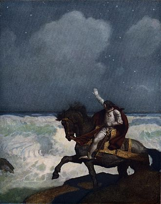

Perceval, también conocido como Parzival, Parsifal o Percibal, es uno de los legendarios Caballeros de la Mesa Redonda del rey Arturo. En la literatura galesa su nombre es Peredur. Es famoso principalmente por su participación en la búsqueda del Santo Grial.
La Historia de Sir Perceval
Hay muchas versiones del nacimiento de Perceval. En la mayoría de las fuentes es de cuna noble, siendo su padre bien el rey Pellinore, bien otro caballero respetable. Su madre no suele ser nombrada pero a veces desempeña un papel importante en las historias. Su hermana es la portadora del Santo Grial, y a veces se la llama Dindrane aunque en otras es su prima Elaine de Corbenic. En las historias en las que es hijo de Pellinore sus hermanos son Sir Tor, Sir Aglovale, Sir Lamorak y Sir Dornar.
Tras la muerte de su padre, la madre de Perceval le lleva a los bosques de Gales donde le cría a espaldas de las tareas propias de los hombres hasta los 15 años. Sin embargo, finalmente un grupo de caballeros atraviesa el bosque y Perceval queda impactado por su heroica apariencia. Queriendo convertirse en caballero, el muchacho viaja hasta la corte del rey Arturo, donde tras probar su valía como guerrero es investido caballero e invitado a unirse a los Caballeros de la Mesa Redonda.